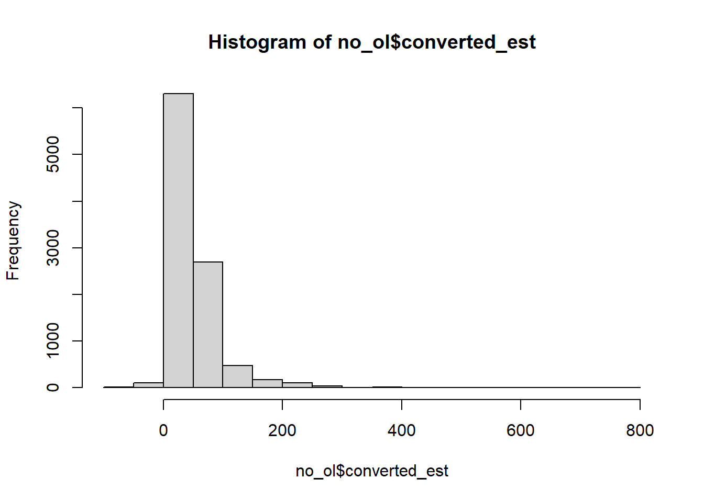
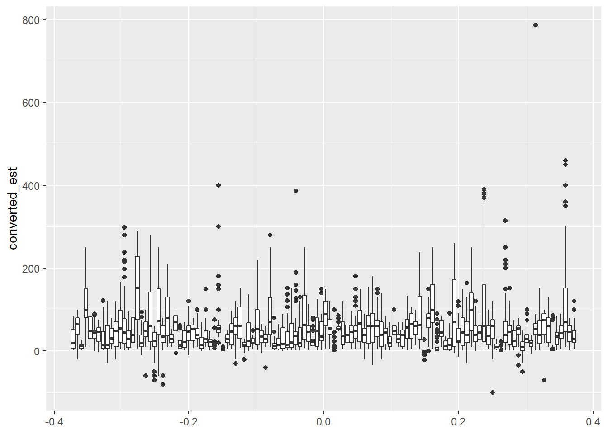

#did one person do the study twice?estimateDataAll %>%group_by(subject) %>%summarize(ntrials =n()) %>%arrange(desc(ntrials))
# A tibble: 150 × 2
subject ntrials
<chr> <int>
1 a9a31aa31b79ce682004 336
2 03b16361e0733153a514 168
3 03c20eaf3c5546c146e3 168
4 04bd8ef32126c9364092 168
5 07c208d8989c09cafdcb 168
6 085a9e8f6e53ee72a672 168
7 08c2c1e4288f21b62161 168
8 0b6a4528f3365dcfe149 168
9 0bc19d73dfcc79108774 168
10 0d592ffa0ef1a0d4a525 168
# … with 140 more rows
# ℹ Use `print(n = ...)` to see more rows
#should we keep their first run?estimateDataAll2 <- estimateDataAll %>%group_by(subject) %>%slice_head(n=168) estimateDataAll2 %>%group_by(subject) %>%summarize(ntrials =n()) %>%arrange(desc(ntrials))
# A tibble: 150 × 2
subject ntrials
<chr> <int>
1 03b16361e0733153a514 168
2 03c20eaf3c5546c146e3 168
3 04bd8ef32126c9364092 168
4 07c208d8989c09cafdcb 168
5 085a9e8f6e53ee72a672 168
6 08c2c1e4288f21b62161 168
7 0b6a4528f3365dcfe149 168
8 0bc19d73dfcc79108774 168
9 0d592ffa0ef1a0d4a525 168
10 0e2ded01caf17495ec9d 168
# … with 140 more rows
# ℹ Use `print(n = ...)` to see more rows
#how many subjects per conditionestimateDataAll2 %>%group_by(subject, condition) %>%summarize(ntrials =n()) %>%group_by(condition) %>%summarize(nsubs =n()) %>%kable()
`summarise()` has grouped output by 'subject'. You can override using the
`.groups` argument.
condition
nsubs
SL
52
TOGGLE
45
WL
53
#how many trials of each typen_of_each <- estimateDataAll2 %>%group_by(subject, estimate_type, stim_distance, stim_heading, stim_number) %>%summarize(ntrials =n())
`summarise()` has grouped output by 'subject', 'estimate_type',
'stim_distance', 'stim_heading'. You can override using the `.groups` argument.
all(n_of_each$ntrials ==1)
[1] TRUE
Remove Outliers
dist_only <- estimateDataAll2 %>%filter(estimate_type =="Distance") %>%ungroup()#make sure all distance estimates are using the same unit??## convert feet to meters#/3.28084dist_only <- dist_only %>%mutate(converted_est =ifelse(units_used =="feet", subject_estimate /3.28084,subject_estimate) )num_runs <- dist_only %>%group_by(subject) %>%summarize(nruns =max(rle(converted_est)$lengths)) %>%arrange(desc(nruns)) %>%print(n=35)
#only one person exceeds the thresholdol_id <- dist_only2 %>%group_by(subject) %>%summarize(mean_est =mean(converted_est)) %>%slice_max(mean_est,n =1) %>%pull(subject)no_ol <- dist_only2 %>%filter(subject != ol_id)hist(no_ol$converted_est)

#outlier trials within people's datasetsggplot(no_ol, aes(y = converted_est, group = subject)) +geom_boxplot()

#we have some very large outliers, and then some negatives too (probably from people thinking they were doing orientation?)# remove negativesno_ol2 <- no_ol %>%filter(converted_est >=0)# remove obvious outliers per personno_ol2 %>%group_by(subject) %>%summarize(n_out =sum(converted_est > (mean(converted_est) +3*sd(converted_est)))) %>%arrange(desc(n_out))
# A tibble: 118 × 2
subject n_out
<chr> <int>
1 bf63561acd2e05d32265 3
2 f559a201d79bdf600dad 3
3 19100d3830890f297f5c 2
4 5260d6ba3c54c0ad8927 2
5 53f308bc2eac9a0186d3 2
6 6d0effd4da7acb5e8ab9 2
7 826e1d16e3b533fb245a 2
8 8de5b549a2ea6dc6e183 2
9 8f80bcc354d05f533ab4 2
10 98b0f6a6c10bbac3ed08 2
# … with 108 more rows
# ℹ Use `print(n = ...)` to see more rows
#the actual maximum distance is 200m# From Mike's writeup: "From the remaining participants, we removed 6 participants whose answers were outliers (greater than 3SD above the mean response for that unique combination of experimental factors)." #not sure how mike arrived at his number of outliers. from this, it sounds like he removed 44 people for having too long of runs. I only get 31. Then I'm not clear on how he's cutting off large responses#how many subjects per conditionno_ol %>%group_by(subject, condition) %>%summarize(ntrials =n()) %>%group_by(condition) %>%summarize(nsubs =n()) %>%kable()
`summarise()` has grouped output by 'subject'. You can override using the
`.groups` argument.
condition
nsubs
SL
42
TOGGLE
37
WL
39
Do Basic Analysis
#initial plot# take out toggle (too cluttered)slwl_only <- no_ol3 %>%filter(condition !="TOGGLE")sub_mean_ests <- slwl_only %>%group_by(subject, condition, stim_distance) %>%summarize(sub_mean_est =mean(converted_est))
`summarise()` has grouped output by 'subject', 'condition'. You can override
using the `.groups` argument.